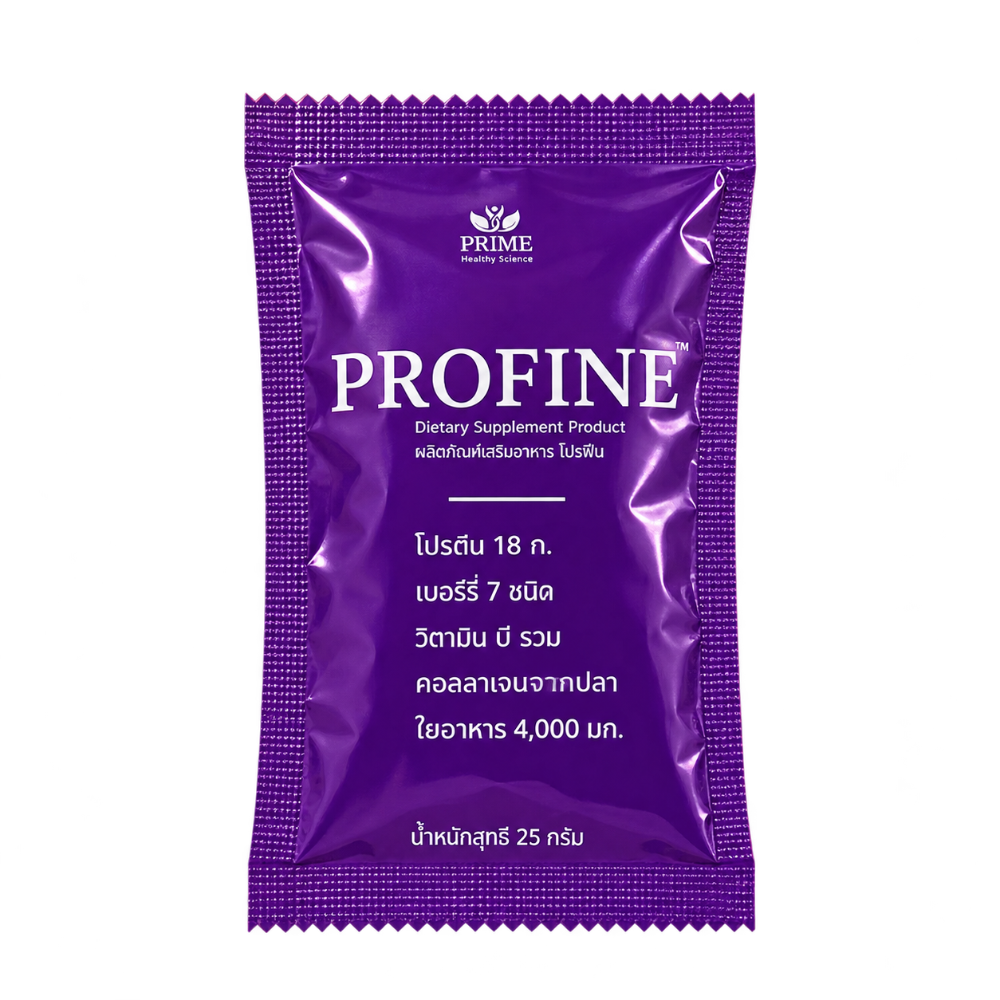
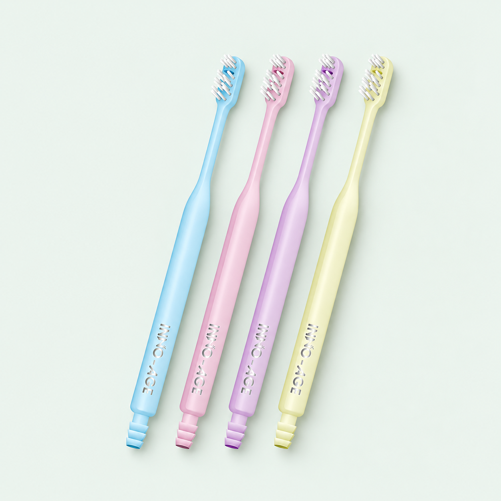
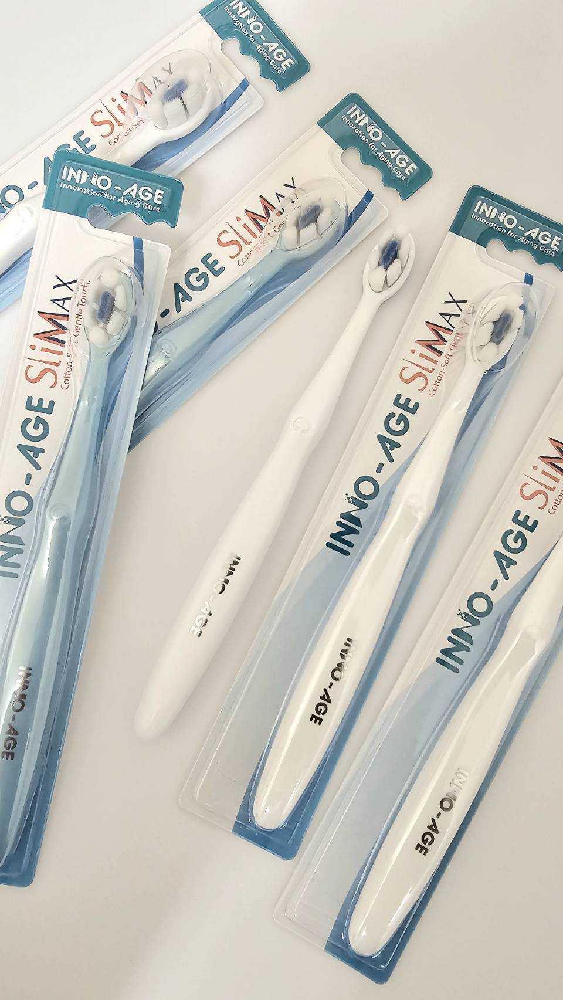

PROFINE / NUTRITION
โปรไฟน์ เบอร์รี่
โปรตีนใสรสเบอร์รี่ จากถั่วลันเตาและข้าว พร้อมกรดอะมิโนจำเป็นอื่น ๆ ดูส่วนประกอบและวิธีชงด้านล่าง
ราคาปลีก฿1,125
ดูข้อมูลผลิตภัณฑ์แชตสอบถามสินค้าข้อมูลสำหรับสั่งซื้อ
รหัสสินค้า: PRO001
PRODUCT CATALOG
เลือกดูผลิตภัณฑ์เสริมอาหาร Profine
และผลิตภัณฑ์ดูแลช่องปาก INNO-AGE
แสดง 8 รายการส่วนประกอบและวิธีใช้
PROFINE / NUTRITION
โปรตีนใสรสเบอร์รี่ จากถั่วลันเตาและข้าว พร้อมกรดอะมิโนจำเป็นอื่น ๆ ดูส่วนประกอบและวิธีชงด้านล่าง
รหัสสินค้า: PRO001

PROFINE / NUTRITION
Profine รูปแบบซอง ขนาดสะดวกสำหรับการใช้งาน
รหัสสินค้า: PRO002
PROFINE / NUTRITION
อีกหนึ่งทางเลือกจากคอลเลกชัน Profine ในรูปแบบกล่อง
รหัสสินค้า: PR003
INNO-AGE / ORAL CARE
โฟมสีฟัน ส่วนผสมจากธรรมชาติ 97% ฟลูออไรด์ 1,450 ppm มีสารสกัดว่านหางจระเข้และ CPC
รหัสสินค้า: INNO01
INNO-AGE / ORAL CARE
ยาสีฟัน ส่วนผสมจากธรรมชาติ 93% ฟลูออไรด์ 1,500 ppm ปราศจาก SLS พาราเบน และแอลกอฮอล์
รหัสสินค้า: INNO02
INNO-AGE / ORAL CARE
น้ำยาบ้วนปาก ส่วนผสมจากธรรมชาติ 98% ฟลูออไรด์ 1,000 ppm ปราศจากแอลกอฮอล์
รหัสสินค้า: INNO03

INNO-AGE / ORAL CARE
แปรงสีฟัน Innoage รุ่น Suction Brush
รหัสสินค้า: INNO04

INNO-AGE / ORAL CARE
แปรงสีฟัน INNO-AGE รุ่น Slimax ตามบรรจุภัณฑ์สินค้า
รหัสสินค้า: INNO05
ลองค้นหาด้วยชื่อสินค้า รหัสสินค้า หรือเลือกกลุ่มอื่น
ราคาที่แสดงเป็นราคาปลีกจากแคตตาล็อกเดิม กรุณาสอบถามราคา ขนาดบรรจุ และสินค้าพร้อมจำหน่ายกับทีมงานก่อนสั่งซื้อ
PROFINE / BERRY
ผลิตภัณฑ์เสริมอาหารสำหรับผู้ต้องการเสริมโปรตีน
ข้อมูลต่อ 1 ซอง (25 กรัม) ตามเอกสารแนะนำผลิตภัณฑ์
โปรตีนสกัดจากถั่วลันเตาและข้าว พร้อมกรดอะมิโนจำเป็นอื่น ๆ ใยอาหาร อินูลิน คอลลาเจนเปปไทด์จากปลา และวิตามินบีรวม ไม่มีน้ำตาล ไม่มีไขมัน
โปรไฟน์ 1 ซอง (25 กรัม) ละลายในน้ำ 150 มิลลิลิตร
ไม่มีผลในการป้องกันหรือรักษาโรค เด็ก สตรีมีครรภ์ และสตรีให้นมบุตร ไม่ควรรับประทาน ควรกินอาหารหลากหลายครบ 5 หมู่ ในสัดส่วนที่เหมาะสมเป็นประจำ และดื่มน้ำให้เพียงพอ
เลขสารบบอาหาร 12-1-05266-5-0018 · ใบอนุญาตโฆษณาเลขที่ ฆอ. 3156/2567 ตามเอกสารที่ให้มา
สอบถามรายละเอียดโปรไฟน์PROFINE / EVERYDAY BALANCE
เติมโปรตีนจากโปรไฟน์ ควบคู่กับการเลือกคาร์โบไฮเดรตและจัดสัดส่วนอาหารให้เหมาะสมในแต่ละวัน
คาร์โบไฮเดรตที่มีโครงสร้างโมเลกุลซับซ้อน โดยเลือกแหล่งอาหารที่มีใยอาหารสูง เช่น ธัญพืชไม่ขัดสีและมัน ช่วยให้ร่างกายค่อย ๆ ย่อยและดูดซึม
เลือกคาร์โบไฮเดรตที่มีใยอาหารร่วมกับโปรตีน เพื่อช่วยให้อิ่มนาน เป็นส่วนหนึ่งของการจัดมื้ออาหารสำหรับผู้ที่ต้องการควบคุมน้ำหนัก
แม้จะเป็นคาร์โบไฮเดรตเชิงซ้อน ก็ควรควบคุมปริมาณให้เหมาะกับความต้องการพลังงาน เพราะการได้รับพลังงานเกินความต้องการอาจสะสมเป็นไขมันในร่างกายได้
ควรรับประทานอาหารหลากหลายครบ 5 หมู่ ในสัดส่วนที่เหมาะสม และออกกำลังกายอย่างสม่ำเสมอ โปรไฟน์ไม่มีผลในการป้องกันหรือรักษาโรค
INNO-AGE / INNOVATION FOR AGING CARE
เปรียบเทียบโฟมสีฟัน ยาสีฟัน และน้ำยาบ้วนปาก ตามเอกสารแนะนำ INNO-AGE
| ส่วนประกอบ | โฟมสีฟัน | ยาสีฟัน | น้ำยาบ้วนปาก |
|---|---|---|---|
| ส่วนผสมจากธรรมชาติ | 97% | 93% | 98% |
| สารสกัดจากว่านหางจระเข้ | มี | มี | มี |
| CPC | มี | มี | มี |
| ฟลูออไรด์ | 1,450 ppm | 1,500 ppm | 1,000 ppm |
| SLS / พาราเบน / แอลกอฮอล์ | 0% | 0% | 0% |

DAILY ORAL CARE
เลือกผลิตภัณฑ์และแปรงสีฟันให้เหมาะกับการใช้งาน สอบถามทีมงานเพื่อรับข้อมูลสินค้าเพิ่มเติม
ติดต่อสอบถามสินค้าLET’S FIND YOUR DAILY CARE
สอบถามข้อมูลสินค้า ราคา หรือการสั่งซื้อ
สำหรับลูกค้าทั่วไป ร้านขายยา และสถานพยาบาล